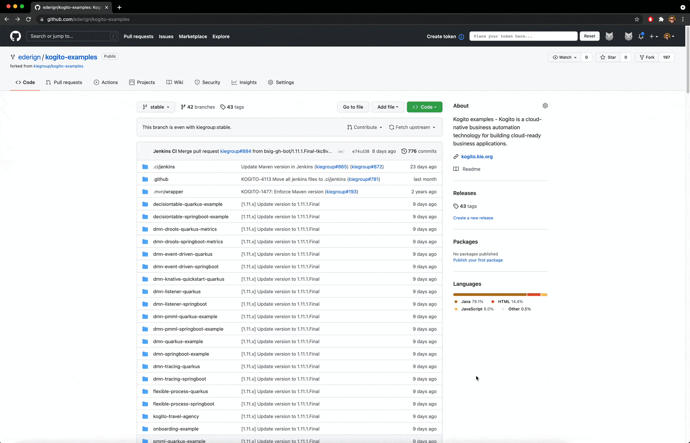
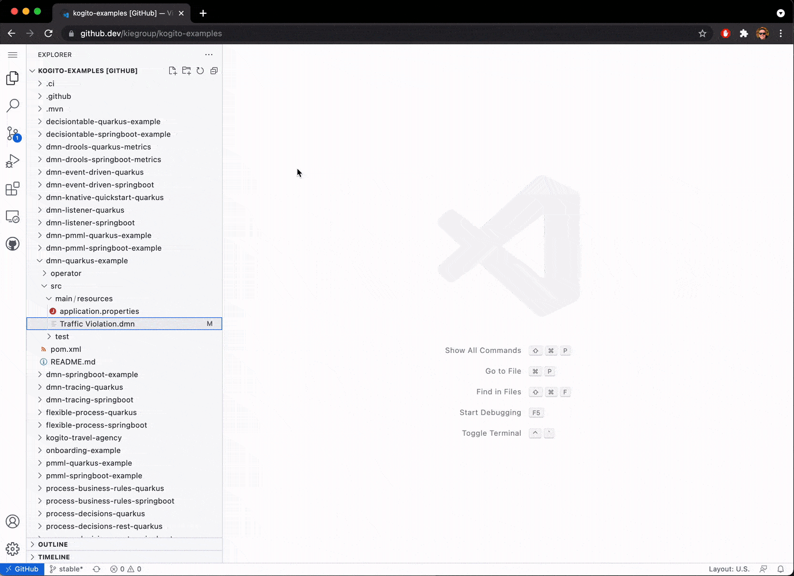
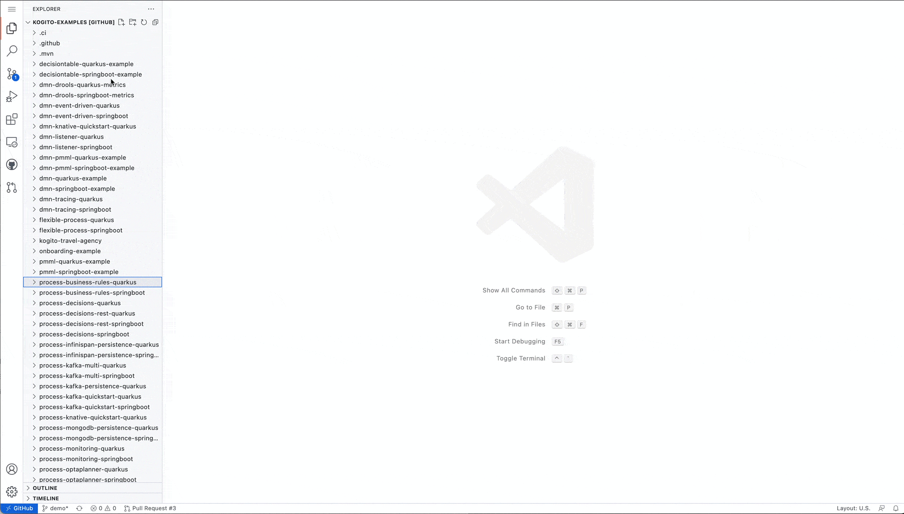
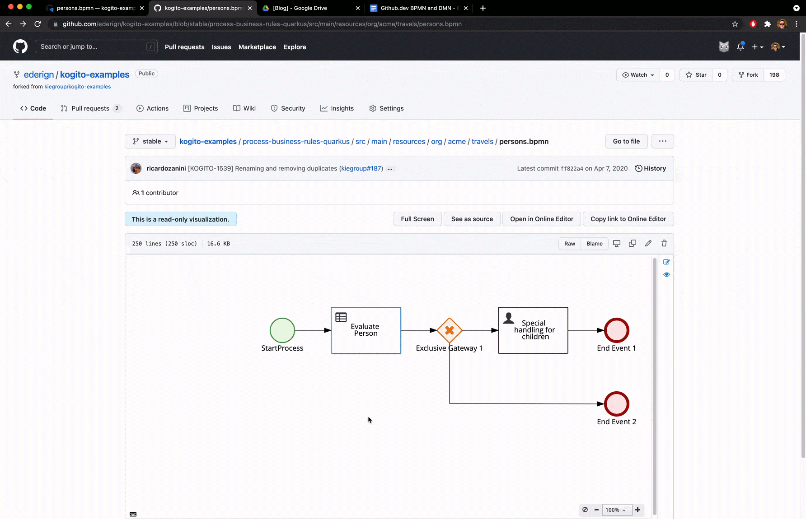

Visualize, Edit, and Share your BPMN, DMN and PMML with github.dev
Some weeks ago, GitHub released github.dev which allows you to open any repository in VS Code directly from your browser just pressing . (dot key) on it.
On Kogito Tooling 0.13.0 release, we updated our VS Code BPMN, DMN and PMML extension to also work on this innovative environment. Check it out:

Note: There is another option to launch github.dev, just replace “.com” on your github URL to “.dev”, as example: https://github.dev/kiegroup/kogito-examples
How to start to use it?
It’s super simple. As soon as you open your “.dev” environment, click on the Extensions menu and search for the BPMN, DMN and PMML extension on VS Code marketplace:

Collaborate
In my opinion, the real power of the github.dev environment is to quickly visualize and collaborate with a project. For instance, you can quickly visually see the differences between your edited model and the version of the current branch:

If you are happy with your changes, you can even send a Pull Request directly from github.dev:

Next steps
The github.dev is still fresh and new, but I can already see a lot of value for the BPMN and DMN users. As with any experimental feature, there are some issues that we plan to fix on our Editors in the next releases, including:
- KOGITO-5956 Resource Content API Support on github.dev, enabling access in a model of other files;
- KOGITO-5957 PR visualization doesn’t load all editors side by side on github.dev
Stay tuned!

{kind=link}
{kind=link}
{kind=link}
{kind=link}